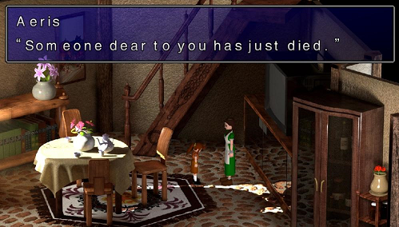

7th Heaven Help
What is 7th Heaven? | Getting Started | Using 7th Heaven | Creating Mods | FAQ/Troubleshooting
Contents:
- Frequently Asked Questions (FAQ)
- Troubleshooting
Q: Do I need to run 7th Heaven as Administrator?
A: You do not have to manually right-click and choose 'Run as Administrator'. However, due to the nature of injecting data into the game from a different process (7H), administrative privileges are required. You can start 7H normally and you'll automatically be prompted to run it as admin. Just click 'Yes' at the UAC prompt.
Q: Why do some of my mods have the category 'Unknown'?
A: The categories feature is new in 7th Heaven 2.0. They exist for 2 reasons: So you know more about what the content of the mod is, and more importantly, they help 7th Heaven to auto sort the mod load order for you when you click the Auto Sort button. Mods and catalogs must be updated in order to support 7H 2.0 categories. So, if your mod shows 'Unknown', ask the mod author or catalog owner nicely if they will please add this metadata to their mod.xml file in their mod or to their catalog. It's a quick and easy change, but helps everyone out a lot.
button. Mods and catalogs must be updated in order to support 7H 2.0 categories. So, if your mod shows 'Unknown', ask the mod author or catalog owner nicely if they will please add this metadata to their mod.xml file in their mod or to their catalog. It's a quick and easy change, but helps everyone out a lot.
Q: Can I keep my Steam achievements and cloud saves?
A: Yes and No. Yes, because 7th Heaven doesn't break your FF7 Steam install, so you're welcome to start up and play the Steam version any time you want if you need a reason to feel good about yourself--but without mods. No, because 7th Heaven requires the 'converted' 1998 version to inject mods. So, if you want to play with mods through 7th Heaven, you will not be able to use the features from Steam.
Q: Where are my saved game files?
A: You can find them under your FF7 game installation\save subfolder. It is a good idea to copy the files in that folder to somewhere safe in case you need to restore them later.
Q: Do I need to run the Game Converter?
A: No, it is completely unnecessary. 7th Heaven 2.0 includes everything you need in one package. The built-in Game Launcher is responsible for 'converting' your game and getting it ready to play now. Whether you ran the old Game Converter or you just did a clean install of Final Fantasy VII, you're good to go.
Q: What if I already ran the Game Converter? Will 7H still work?
A: Yes, 7th Heaven 2.0 will automatically upgrade and clean up anything from the old Game Converter. Whether you ran the old Game Converter or you just did a clean install of Final Fantasy VII, you're good to go.
Q: Why are the ISO auto mount/dismount options grayed out in Game Launcher Settings?
A: These features require Windows 8 or newer. If you have Windows 7 or older, you will need to mount the ISO game disc manually with other software, or play with your original 1998 discs if you have them. The virtual game disc can be found under your 7th Heaven\Resources\ folder and is called 'FF7DISC1.ISO'.
Q: Why is Reunion Driver Fix grayed out in Game Launcher Settings?
A: If you do not have the full Reunion R06+ installed in your FF7 folder, there is no need for this option so therefore it is disabled. If R06+ is found to be installed, this option is available and on by default. It is recommended to leave this ON if you have R06+ installed because otherwise your mods won't apply properly and your display settings will not be correct because 7H will not be able to use its own custom Game Driver.
Q: Is Reunion R06+ compatible with 7H?
A: No, they do not work together, but 7th Heaven will not interfere with Reunion, so you can have both installed side-by-side. 7th Heaven temporarily disables Reunion R06+ when you click 'Play'. Don't worry, once you exit the game, you can play Reunion R06+. We recommend you play with a Reunion mod designed for 7th Heaven instead.
Q: Where are ff7_bc.exe and ff7_mo.exe? Can I use Reunion R03c still?
A: Those exes came with the old Game Converter which is no longer used. 7H 2.0 does not include them. They have been known to cause issues with mods. We recommend you stick with using the original FF7.exe always. We also recommend upgrading to a newer version of a Reunion mod that works with the stock FF7.exe. If you are stuck in the past, you may find the old exes under your '7H2.0-BACKUP' subfolder under the FF7 installation folder.
Q: But what about a Menu Overhaul?
A: We recommend a new Menu Overhaul mod by Chrysalis called 'Enhanced Stock UI'. It uses the stock FF7.exe.
Q: What happened to FF7Config? Do I still use that?
A: No. A version of it is built into 7H now. In fact, 7H will overwrite any FF7Config options with its own that you have specified in the Game Launcher Settings. The FF7Config.exe is still included for legacy purposes, just in case you need it for some reason.
Q: Do Windows Updates that change the registry or running FF7Config break 7H anymore?
A: No, they shouldn't. The new Game Launcher checks files and the registry for changes and fixes them if needed.
Q: What is the '7H2.0-BACKUP' folder under my FF7 installation folder?
A: Sometimes when 7H starts or the Game Launcher runs, certain files or registry keys may be cleaned up or updated, particularly if the old Game Converter was previously used. This folder contains backups of those files/changes. Subfolders are named according to date and time.
Q: How do I get my 7th Heaven profile details?
A: Learn all about that here: Profiles
Q: 7th Heaven won't start! It crashes immediately when trying to open it. What do I do?
A: Something may have gotten corrupted in the cache, library, or your settings. You can try uninstalling/reinstalling 7H, or try deleting the '7thWorkshop' subfolder in your 7H install folder which will reset everything.
Q: I'm having trouble downloading mods. I get errors like 'Quota exceeded'. What do I do?
A: You can read about that at Download Mod.
Q: I don't hear any sound or music in the game. Or, I want to switch between MIDI and high-quality OGG music. What can I check?
A: Make sure that your sound isn't muted and that your volume is turned up, both in Windows and if you have a physical volume control/mute button. Go into the Game Launcher Settings and make sure your volume sliders are up. Double-check that your correct audio output device is selected from the drop down. Click to test sound output and verify that you can hear sound going to the correct device. If everything looks and sounds good here, click 'Save'. Now, go to Game Driver Settings. Click the 'Advanced' tab. If you want to listen to the original low-quality MIDI, select 'Original MIDI' from the 'Music Option' drop down. If this is selected, you will not hear any music from your mods and will only hear the original game music. If you want to listen to high-quality OGG music and music from mods, you will need to select 'VGMStream (Recommended)' from the drop down. Note: If you have the original 1998 game, it does not come standard with high-quality OGG music. If you want to hear music on the 1998 version you MUST select the 'Original MIDI' to hear music if you don't have a music mod installed and active. But, if you DO have a music mod installed and active, then again, be sure that 'VGMStream (Recommended)' is selected.
to test sound output and verify that you can hear sound going to the correct device. If everything looks and sounds good here, click 'Save'. Now, go to Game Driver Settings. Click the 'Advanced' tab. If you want to listen to the original low-quality MIDI, select 'Original MIDI' from the 'Music Option' drop down. If this is selected, you will not hear any music from your mods and will only hear the original game music. If you want to listen to high-quality OGG music and music from mods, you will need to select 'VGMStream (Recommended)' from the drop down. Note: If you have the original 1998 game, it does not come standard with high-quality OGG music. If you want to hear music on the 1998 version you MUST select the 'Original MIDI' to hear music if you don't have a music mod installed and active. But, if you DO have a music mod installed and active, then again, be sure that 'VGMStream (Recommended)' is selected.
Q: Why does my volume keep resetting after I change it in the game?
A: That's because 7th Heaven 'pushes' your settings that you configure in the Game Launcher Settings to the game every time you click the 'Play' button. So, if you want to change your volume to be set at a specific volume on game launch, be sure to set it here.
Q: Why do my keyboard or controller settings reset every time after I change them in the game?
A: That's because 7th Heaven 'pushes' your settings that you configure in the Game Launcher Settings to the game every time you click the 'Play' button. So, you should configure your control settings here. For more information on using the presets and/or using your own custom controls, look at Controls.
Q: I don't see any movies in the game. What's wrong?
A: Most likely your movies are missing, or you have the incorrect path selected in your General Settings. Make sure your path is pointing to the correct location where your movies folder is. The Steam version should include all of your movies and 7H copies them to your FF7\data\movies\ folder by default. If you have the original 1998 disc version of the game, the movies do not get copied to your computer by default. For this, you can use the 'Import Movies From Disc' feature in Game Launcher Settings.
Q: I get a black screen after starting a new game. Why?
A: You're probably using the old 1998 version and are missing movies or don't have a movies mod installed and active. You can press [OK] (Confirm) a few times then push [Menu]. Exit the menu and your screen should return to normal. To prevent the issue, install and activate a movies mod or copy your movies from disc. You can use the 'Import Movies From Disc' option in 7th Heaven 2.0 to help you.
Q: I get a beep and a black screen, then the game closes. Why?
A: While this should be rare now with 7th Heaven 2.0, it can happen. You most likely have a sound device selected in your Game Launcher Settings that is unavailable. For example, you may have selected a USB headset, but it is now unplugged. It is recommended that you keep your Sound Device selected as 'Auto-Switch (Windows Default)' which can prevent this from happening, because 7H will always use the device that Windows is using.
Q: Why do I have weird pink/purple/cyan lines everywhere on screen?
A: This can be caused by having 'Linear Filtering' turned on in the Game Driver. Open your Game Driver Settings and go to the 'Rendering' tab to turn this off.
Q: Why do I have weird texture blockiness/black boxes on screen?
A: This is a sign of texture corruption. It is recommended you save your game immediately as you could start experiencing crashing due to possibly being low/out of memory. Try adjusting the texture memory cache. Some computers work better with a lower value, some with higher values. If you're using very high resolution texture mods, it is advised to try a lower downscaled version of the mod if you experience slowness or crashing.
Q: Why do I have numbers or weird messages on my screen?
A: You have either 'Show FPS Overlay' or 'Show Stats Overlay' turned on. Open your Game Driver Settings and go to the 'Rendering' and/or 'Advanced' tabs to find these settings and turn them off. It's also possible you have some debug options turned on in your Game Driver config file which is 7H_GameDriver.cfg saved in your FF7 folder. The debug options should be at the bottom of the cfg file. You can disable them by putting a # symbol as the first character on the line for that option. The cfg file can be opened in a text editor like Notepad.
Q: My Game Driver/FF7 keeps crashing. Why?
A: Unfortunately, there is no easy answer to this. There are multiple causes for crashing. The Aali driver is not known for being rock solid stable. The first thing you should do is deactivate all of your mods and try to get past the same area in the game again. If there is no crash, then it's possible that one of your mods is causing an issue. Re-enable your mods one by one until you experience the crash again. If you've narrowed the problem down to a specific mod or combination of a couple of mods, report the problem to the mod author(s). Other causes for crashing could be low/out of memory problems. Try changing your texture cache memory to another value, both lower or higher since different people can have better stability with different values. You could also be using a mod that has very high resolution textures which the game nor the driver handle very well. It is advised to use lower resolution texture mods if you experience a lot of crashing. There is usually very little difference in noticeable visual quality when going to extreme resolutions. Some options in the Game Driver may also cause crashing depending on your setup or video card. Try disabling Linear Filtering, Pixel Buffer (Objects)--especially if you have an AMD/ATI card, and Post-Processing. Post-Processing shaders can add an element of instability on some graphics cards. Try restarting your computer. Try clearing the texture cache. Sometimes certain audio or video files/mods cause crashing due to unrecognized codecs or the method in which they were encoded. If you're still having issues, report the error (and follow the instructions given) to the developers.
Q: My text looks weird/spaced out in dialogue in the game. Why?
A: You are probably using the old Reunion R03e mod with the wrong EXE, or using the ff7_bc.exe without the Reunion R03e mod active. We don't recommend using special EXEs. You should stick with the stock FF7.exe and use a newer Reunion mod for 7H and/or a newer Menu Overhaul (Enhanced Stock UI by Chrysalis).

Q: My game's graphics are cut off or not centered. Why?
A: Learn all about that here: High-DPI Scaling Fix
Q: My mods don't change in the game when I change my mods or mod settings in My Mods list. What's going on?
A: You might have the 'Texture Cache' turn on in your Game Driver Settings. This can cause problems because when a texture is loaded, it gets saved to the texture cache. When the game needs that same texture, it will load it from the cache (for better performance). Unfortunately, this has the side effect of saving the first texture used in the game to the cache and all future versions are ignored/not overwritten. So, if a new mod is trying to load a new texture, it is ignored, because that texture is already in the cache. To fix this, go to the 'Advanced' tab and turn on 'Texture Cache'. Then, you will need to also click the 'Clear Texture Cache' button.
Q: What is the 'Code 5' error/fix?
A: Learn all about that here: Code 5 Fix (aka 640x480 compat. flag)
Q: I get 'Error code: YARR! Unable to continue.' What do I do?
A: Post the problem and a link to your 7th Heaven applog.txt on the Qhimm forums.
Top of page